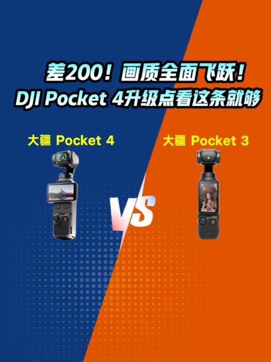
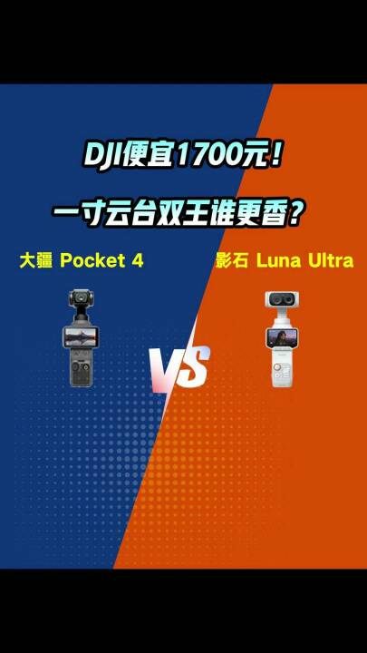

五月天演唱会手账
「五月天演唱会手账」是一个免费在线工具。你可以记下看过的每一场演出：日期、城市、场馆、座位、歌单，还有散场后仍留在心里的那一刻。输入演出名称时，手账会自动补充内置场次的日期、城市、场馆和歌单。
所有记录只保存在你自己的浏览器里，不需要注册账号。你可以随时搜索旧记录、导出 JSON 备份，或换一台设备后重新导入。
「五月天演唱会手账」是一个免费在线工具。你可以记下看过的每一场演出：日期、城市、场馆、座位、歌单，还有散场后仍留在心里的那一刻。输入演出名称时，手账会自动补充内置场次的日期、城市、场馆和歌单。
所有记录只保存在你自己的浏览器里，不需要注册账号。你可以随时搜索旧记录、导出 JSON 备份，或换一台设备后重新导入。
降价也拦不住参数内卷？在万元级旗舰战场，苹果iPhone 17 Pro Max即便给出618特惠降价，门槛仍比华为Pura 90 Pro Max高出2500元。而华为还有超越感官的2亿长焦、6000毫安时大电池与IP69满级防护强势宣战。#苹果 #iPhone17PM #华为 #Pura90PM #摄影旗舰 #旗舰手机

03 去视频号观看 ↗仅200元差价，Pocket 4完成生产力跃升，3700万像素、4K/240fps、10bit D-log拔高视频上限，107G内置存储连存储卡都省了！面对高性价比换代，专业创作者是果断升级，还是压榨3代残值？#大疆 #Pocket4 #Pocket3 #手持云台相机 #专业摄影

04 去视频号观看 ↗都是1英寸底，Pocket 4卖2999，Luna Ultra敢卖4705——8K双徕卡真能值回票价？口袋轻便党看完沉默了，你钱包扛得住吗？#大疆 #影石 #云台摄影机 #Pocket4 #LunaUltra #Pocket云台
没有匹配的作品，换个关键词试试。